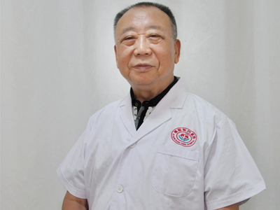

刘业兴 副主任医师
刘兴业 男科名医 副主任医师 毕业于湖南医科大学，对泌尿生殖疾病的诊疗具有…[详细]
|
范瑞仙 主治医师
范瑞仙 主治医师 中华医学会河南省分会会员 中国妇科疾病研究会员 毕业于新乡…[详细]
|
高小娟 副主任医师
高小娟 副主任医师 濮阳东方医院妇产科主任 中华医学会河南分会会员 河南省医…[详细]
|

白海庆
白海庆 男科主任 中华医学会泌尿外科学会会员 …[详细]
|
史培显
史培显 男科主任 中国名医协会男科分会会员 毕业于商丘医学高等专科学院，…[详细]
|
付祖国
付祖国 妇科主任 湖北省妇科专家会诊组委会委员 中华妇幼保健协会研究…[详细]
|
刘欣 主治医师
刘欣 主治医师 中华医学会河南省分会会员 中国妇科疾病研究会员 长期从事妇产…[详细]
|
刘军
濮阳东方医院专家组成员，从事泌尿外科工作20多年，具有丰富的临床实践经验…[详细]
|

周海 副主任医师
副主任医师 东方医院外科主任 中华医学会会员 1970年毕业于河南医学院医疗系… [详细]
|
刘慧芳
刘慧芳 东方医院妇科主任 濮阳东方医院妇科学科带头人 中国名医理事会理事…[详细]
|
邓兰山 副主任医师
副主任医师 教授 中国中西医学会专业委员 东方医院泌尿生殖首席名医 邓兰山教… [详细]
|
周海 副主任医师
副主任医师 东方医院外科主任 中华医学会会员 1970年毕业于河南医学院医疗系… [详细]
|

夏伏生
夏伏生 男，1937年生。毕业于河南医科大学医疗系，原河南省濮阳市人民医院妇…[详细]
|
郭小奇 主任医师
郭小奇 主任医师 教授 原中国人民解放军北京军区总医院妇产科主任 原全国优生…[详细]
|